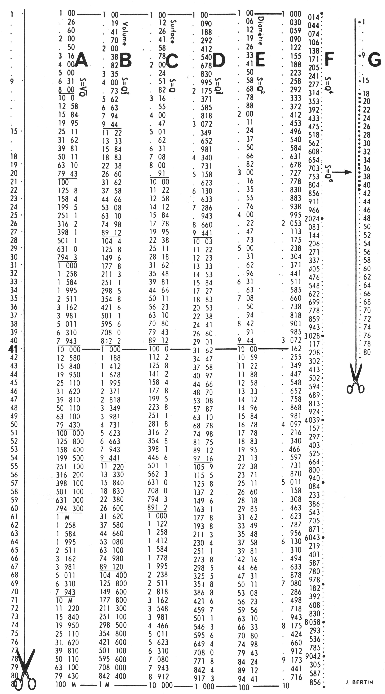
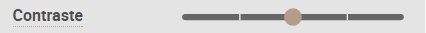
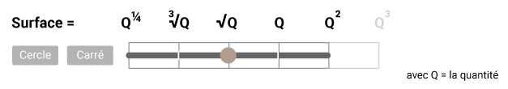
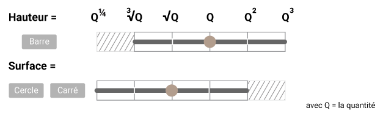

Le contraste (valeurs > symboles)
A toute valeur de la série statistique correspond un point de taille proportionnelle à celle-ci.
Le point de départ : une carte avec des symboles proportionnels
Lors de la visualisation des valeurs d'une série statistique par des symboles proportionnels (valeurs > symboles, choix par défaut), des disques rouges apparaissent alors par défaut sur la carte.
Plusieurs paramètres permettent d'en modifier :
-
la taille évidemment qui permet de réduire/agrandir tous les symboles, proportionnellement aux valeurs qu'elles figurent
-
la forme. Les cercles et carrés varient de taille selon les 2 dimensions du plan alors que les barres ne varient que sur une seule.
-
la couleur qui n'est que accessoire ici
-
le contraste. Il n'apparaît dans Khartis que dans la visualisation de valeurs > symboles. Il comprime ou dilate la taille des symboles pour en changer la "lecture" normale et l'optimiser.

Pourquoi comprimer ou dilater la taille des symboles ?
Les auteurs de Khartis reprennent le principe dit des "échelles extensives" énoncé par Jacques Bertin dans son ouvrage La graphique et le traitement graphique de l'information (Flammarion, 1977). Ce principe est très utile pour figurer des quantités dont le rapport entre les valeurs MIN et MAX est soit très faible (inférieur à 1/10, comme des rendements agricoles ou la taille humaine moyenne par exemple) soit très étendu (1/1000, comme la densité de population).

Comment utiliser le contraste des symboles dans Khartis ?
Par défaut le curseur du contraste est placé au centre de la règle qui permet 2 niveaux de compression (vers la gauche) et 2 niveaux de dilatation (vers la droite).

Ces "échelles extensives" que propose Khartis appliquent au calcul de la hauteur (pour les barres) ou des surfaces (pour les disques et les carrés) des facteurs d'agrandissement/réduction, des ratios surface/quantité sensiblement identiques.
Pour les barres, l'échelle de ratio est calée par défaut sur la formule suivante Hauteur = Quantité

Pour les cercles et carrés, l'échelle est calée par défaut sur la formule Surface = Quantité 
On notera au passage que ces échelles se chevauchent : 
Les auteurs de Khartis ont voulu cette souplesse (certains diront hérésie) dans la transcription de la taille sur des quantités absolues pour laisser l'utilisateur explorer librement son jeu de données et décider du meilleur rendu possible. Le résultat obtenu doit permettre non pas de mesurer exactement les rapports de taille exacts et précis, que l'oeil ne peut percevoir ; il donne une image qui donne à voir une certaine géographie du phénomène étudié.